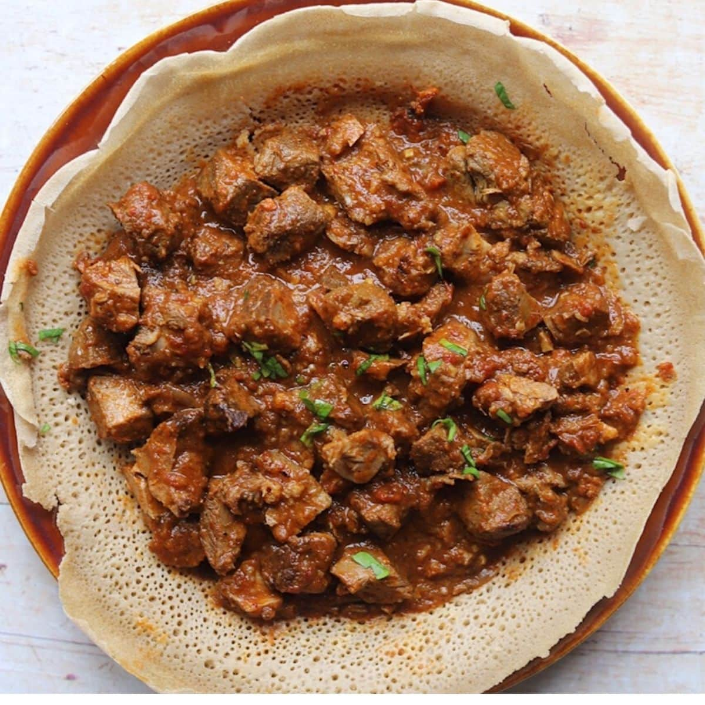

ZIGNI RECIPE

Ingredients
600g of beef shin, diced
4 tbsp of olive oil
1 onion, diced
1 red pepper, quartered then sliced
2 garlic cloves, sliced
1 knob of ginger, grated
2 tbsp of berbere
2 tbsp of tomato puree
3 plum tomatoes, chopped
500ml of beef stock
salt, to taste
freshly ground black pepper
Method
1.Season the diced beef with salt and pepper. Heat 2 tbsp of olive oil in a large pan and sear the beef on a high heat until evenly browned. Remove from the pan and set aside
2.Turn the heat down and add the remaining 2 tbsp olive oil. Sauté the onion, peppers, ginger and garlic with the berbere spice for 5–8 minutes, or until soft
3.Add the tomato purée, stir well and cook out for a further minute
4.Return the beef to the pan along with the chopped tomatoes and stock and cover with a lid. Simmer on a very low heat for 1 hour, then remove the lid and simmer for a further half an hour, or until the sauce has reduced and the beef is tender
5.Taste to check the seasoning and serve hot